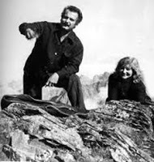

Georges Brassens chante "La non-demande" accompagné par Pierre Nicolas à la basse.
|
1. Beloved, for mercys sake, dont let Us make Cupid aim at himself, His fledged darts! [1] Many lovers tried it before Who have paid with their lost joys for Their profaned hearts. Your hand in marriage Ive the honour not to ask Lets not inscribe Our names at the end Of a pact. 2. Let the bird be free of bondage Let us be each others hostage, Just on parole And devil take the mistress-cook Enthralling hearts with cooking book, Pan, pot and bowl. Your hand in marriage Ive the honour not to ask Lets not inscribe Our names at the end Of a pact. 3. Oft would Venus make herself old Completely baffled, should she hold [2] Pans or kettles. At no price would I ever wish To pluck off into the main dish Daisy petals. [3] Your hand in marriage Ive the honour not to ask Lets not inscribe Our names at the end Of a pact. 4. It may seem snug to keep afar, Out of view, preserved in a jar Of marmalade The tasty forbidden apple [5] Once its cooked, its skin will dapple; Its taste will fade. Your hand in marriage Ive the honour not to ask Lets not inscribe Our names at the end Of a pact. 5. It removed so much of their charm, Revealing her secrets did harm Poor Melusine. [4] The ink of billets-doux fades off Fast in-between the pages of Books for cooking. Your hand in marriage Ive the honour not to ask Lets not inscribe Our names at the end Of a pact. 6. Of a servant I have no need Of keeping you far I take heed From broom and sink. Eternal bride who marries not Of you, the lady of my thoughts, [6] I always think. Your hand in marriage Ive the honour not to ask Lets not inscribe Our names at the end Of a pact. [7] Transl. Christian Souchon (c) 2017
|
TRANSLATION NOTES 1) It was for Cupid, the God of love, to aim his arrows himself. Love should be spontaneous and it is a sacrilege for people to think to arrange things for themselves. 2) "Perd son latin" The phrase « Jy perds mon latin » means « I am completely baffled by it ». Brassens uses this image to conjure up the mental decline caused by domestic chores and it is humorous as the Goddess of Love was a Roman Goddess. 3) "Effeuiller la marguerite". "Plucking the petals of the oxeye daisy" is a game that lovers play, while saying She loves me she loves me not.. Another image to suggest the adulteration of love by domesticity. 4) In Poitou folklore, Mélusine was a fairy upon whom a wicked spell had been cast which turned her into a siren on one day each week. A local nobleman, Raimond de Lusignan, came across her with other fairies in the woods and was captivated by her beauty and gentle manners. She agreed to marry him on condition that he did not seek to find out her life story or try to see her on Saturdays. They had a happy and most prosperous relationship until one Saturday . As this is a folk tale, which are invariably very miserable you can guess the rest. Brassens is saying that both parties in a relationship are entitled to their own private space, where they retain things secret from the other. 5) The French also talk of le fruit défendu. The English always say "forbidden fruit", but with some hesitation, I have kept the word apple in this line. 6) "La dame de mes pensées .Toujours je pense". There is a play on words here, impossible to translate. In the tradition of chivalry, a knight before entering the lists would choose one lady, of whom he would be the champion and to whom he would dedicate his endeavours. She became la dame de ses pensées. It was a relationship of the mind, a platonic love, because the lady chosen by the knight would, more often, be married to someone else. However the mention of the forbidden apple suggests that sex was an element of these lovers' relationship. (7) The same topic is dealt with in Michel Galiana's poem: Bonheur bourgeois (Middle Class Bliss). |
BIOGRAPHICAL NOTES Adulteration of love by domesticity La non-demande en mariage The title of this song: The Non proposal of Marriage suggests a cynical view of the relationship of a man with a woman. In fact, the song is a sincere love song, in which Brassens expresses to his lifelong fiancée, Joha Heiman, his deep appreciation for her role in their very successful and very individual partnership. Georges Brassens and Joha Heiman shared each others lives, doing a lot of things together, but they lived apart in their separate homes. They had regular telephone conversations and called around to see each other frequently. She went on tour with him and stood in the wings during his performances, keeping an eye on everything. Theirs was a personal and a professional relationship but certainly not a domestic one. They each had their own space, which could be described perhaps as their Saturday of Mélusine. Georges Brassens is reported as saying of his "Püppchen" that she was not his wife, she was his goddess. On her death in 1999, she was buried in the grave of Georges Brassens. These notes are borrowed from David Yendley's blog http://brassenswithenglish.blogspot.fr/2008/11/la-non-demande-en-mariage.html where an accurate prose translation will be found.  |